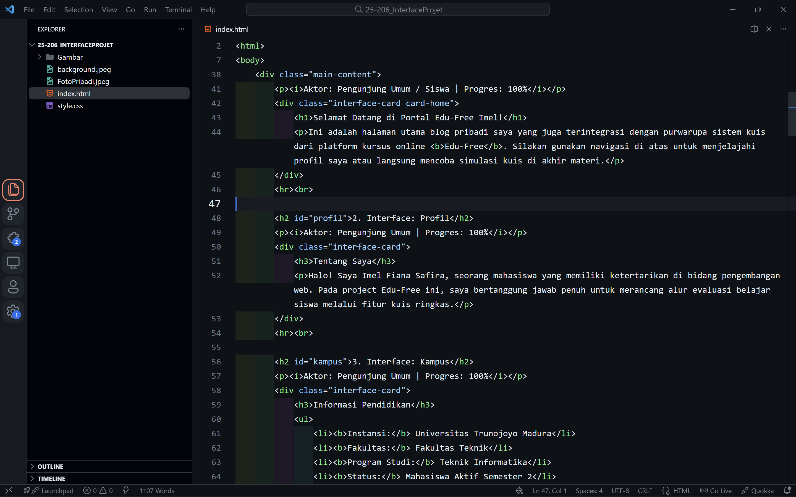
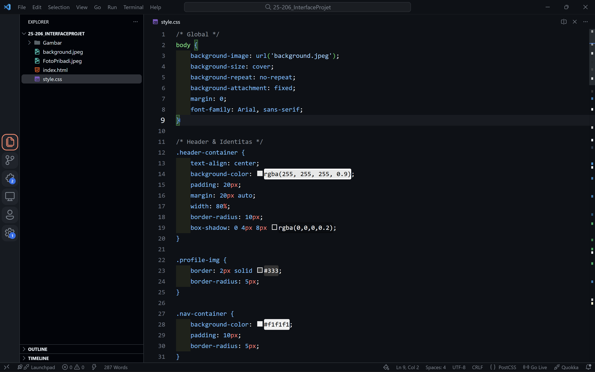

1. Interface: Home (Dashboard Blog Pribadi)
Aktor: Pemilik Blog | Progres: 100%
👋 Selamat Datang di Blog Imel!
Dashboard Blog Pribadi & Portofolio
💻 10
Interface Kode Selesai
🧩 1
Modul Kuis Tuntas
✅ 100%
Progress Coding Project
Dari dashboard ini Anda dapat melihat ringkasan kode yang sudah diselesaikan untuk blog pribadi dan project Edu-Free.
Lihat Profil & Project →2. Interface: Profil Pengguna
Aktor: Siswa / Admin | Progres: 100%
Imel Fiana Safira
@vianasfra | Bergabung sejak Jan 2026
Bio: Mahasiswa yang fokus pada pengembangan antarmuka web yang interaktif. Di proyek Edu-Free, saya bertanggung jawab merancang dan memastikan alur sistem kuis berjalan lancar dari awal hingga skor akhir.
Minat Utama: Frontend Web Development untuk kuis yang mudah dipahami siswa.
Fokus Saat Ini: Menyusun dokumentasi interface, merapikan tampilan dashboard blog pribadi, dan menghubungkan setiap halaman kuis agar alurnya konsisten untuk pengguna.
3. Interface: Profil Kampus
Aktor: Admin Sistem / Calon Mahasiswa | Progres: 100%
Universitas Trunodjoyo Madura
Kampus Negeri & Terakreditasi A| Lokasi Kampus | Bangkalan, Jawa Timur, Indonesia |
|---|---|
| Status | Perguruan Tinggi Negeri (PTN) |
| Website Resmi | https://ww2.trunojoyo.ac.id/ |
| Fokus Keilmuan | Teknik, Sains, Sosial Humaniora, dan Ilmu Pendidikan. |
Universitas Trunodjoyo Madura (UTM) merupakan perguruan tinggi negeri yang menjadi pusat pendidikan tinggi di wilayah Madura. Lingkungan kampus didukung fasilitas laboratorium, perpustakaan, dan ruang belajar yang menunjang pengembangan kompetensi mahasiswa.
Fakultas & Contoh Program Studi
- Fakultas Teknik – Teknik Informatika, Teknik Industri, Teknik Elektro.
- Fakultas Pertanian – Agribisnis, Agroteknologi.
- Fakultas Ekonomi & Bisnis – Manajemen, Akuntansi.
Fasilitas Utama Kampus
- Laboratorium komputer untuk praktikum pemrograman dan jaringan.
- Perpustakaan pusat dengan koleksi buku cetak dan digital.
- Ruang diskusi dan area co-working mahasiswa.
4. Interface: Pengalaman & Skill
Aktor: Pengunjung / Recruiter | Progres: 100%
Rangkuman Kegiatan & Skill Akademik
Mata Kuliah Terkait
- Algoritma & Dasar Pemrograman - menyusun flowchart, pseudocode, dan implementasi logika dasar.
- Pengantar Teknologi Informasi - mengenal arsitektur komputer, jaringan, serta etika penggunaan TI.
- Struktur Data - mengimplementasikan array, linked list, stack, dan queue untuk studi kasus sederhana.
Ringkasan: Pengalaman belajar dan praktik di atas menjadi dasar dalam mengerjakan project Edu-Free, khususnya dalam merancang alur kuis, menyusun pertanyaan, dan mengimplementasikan tampilan yang sistematis.
5. Interface: Galeri
Aktor: Pengunjung Umum | Progres: 100%
Dokumentasi Pengerjaan Project Edu-Free
Beberapa cuplikan tampilan antarmuka dan proses pengembangan sistem kuis yang telah dikerjakan.

Struktur HTML Halaman Kuis
Dokumentasi susunan elemen HTML (header, soal, opsi jawaban, dan tombol) yang menjadi kerangka utama interface kuis.

Styling CSS & Tampilan Akhir
Dokumentasi pengaturan warna, layout, dan efek visual dengan CSS untuk dashboard, kartu skor akhir, dan halaman pembahasan.
6. Interface: Intro Kuis (Modul Edu-Free)
Aktor: Siswa | Progres: 100%
Kuis Evaluasi: Dasar HTML
Modul penutup untuk memastikan konsep dasar HTML benar-benar dipahami.
Tips: Kerjakan dengan santai, baca setiap soal dengan teliti, dan fokus pada konsep, bukan sekadar menghafal.
Mulai Kuis Sekarang7. Interface: Soal Kuis
Aktor: Siswa | Progres: 100%
8. Interface: Skor Akhir
Aktor: Siswa | Progres: 100%
Selamat! Kuis Selesai.
Skor Anda: 100 / 100
Progres materi ini telah selesai ditonton dan dipahami (100%). Sertifikat digital Anda sedang diproses oleh sistem.
Jawaban Benar
10 dari 10 soal dijawab dengan tepat.
Status Kelulusan
Lulus (Perfect Score)
Sertifikat
Akan dikirim ke email yang terdaftar di sistem.
9. Interface: Pembahasan
Aktor: Siswa | Progres: 100%
Kunci Jawaban & Evaluasi
Berikut ringkasan kunci jawaban beserta penjelasan singkat untuk setiap soal. Gunakan bagian ini untuk mereview kembali konsep-konsep penting HTML.
- 1 Jawaban B (<p>)
- Tag <p> merupakan singkatan dari paragraph dan digunakan untuk membungkus teks paragraf.
- 2 Jawaban C (href)
- Hypertext Reference (href) digunakan di dalam tag anchor <a> untuk menentukan alamat/URL tujuan.
- 3 Jawaban B (<ul>)
- <ul> singkatan dari Unordered List, yaitu daftar dengan bullet tanpa penomoran.
- 4 Jawaban A (<img>)
- Tag <img> digunakan untuk menyematkan gambar dengan atribut penting seperti
srcdanalt. - 5 Jawaban C (<tr>)
- <tr> (table row) berfungsi membuat baris pada tabel yang berisi sel <td> atau <th>.
- 6 Jawaban A (<h1>)
- <h1> adalah heading dengan tingkat kepentingan tertinggi dalam struktur dokumen HTML.
- 7 Jawaban B (<br>)
- <br> (line break) digunakan untuk memindahkan teks ke baris berikutnya tanpa membuat paragraf baru.
- 8 Jawaban C (<strong>)
- Secara semantik <strong> menandakan teks yang memiliki penekanan penting, biasanya ditampilkan tebal.
- 9 Jawaban A (<!DOCTYPE html>)
- Deklarasi <!DOCTYPE html> memberi tahu browser bahwa dokumen menggunakan standar HTML5.
- 10 Jawaban B (<ol>)
- <ol> (Ordered List) digunakan untuk daftar yang memiliki urutan bernomor (1, 2, 3, ...).
10. Interface: Kontak
Aktor: Pengunjung / Siswa / Admin | Progres: 100%
Butuh Bantuan Terkait Kuis?
Silakan kirimkan pesan jika menemukan bug, kesulitan mengerjakan soal, atau memiliki saran pengembangan fitur baru untuk sistem kuis Edu-Free.
- Email utama: fianasfr@email.com
- Respon maksimal 1x24 jam pada hari kerja.
- Harap sertakan nama dan deskripsi masalah secara jelas.